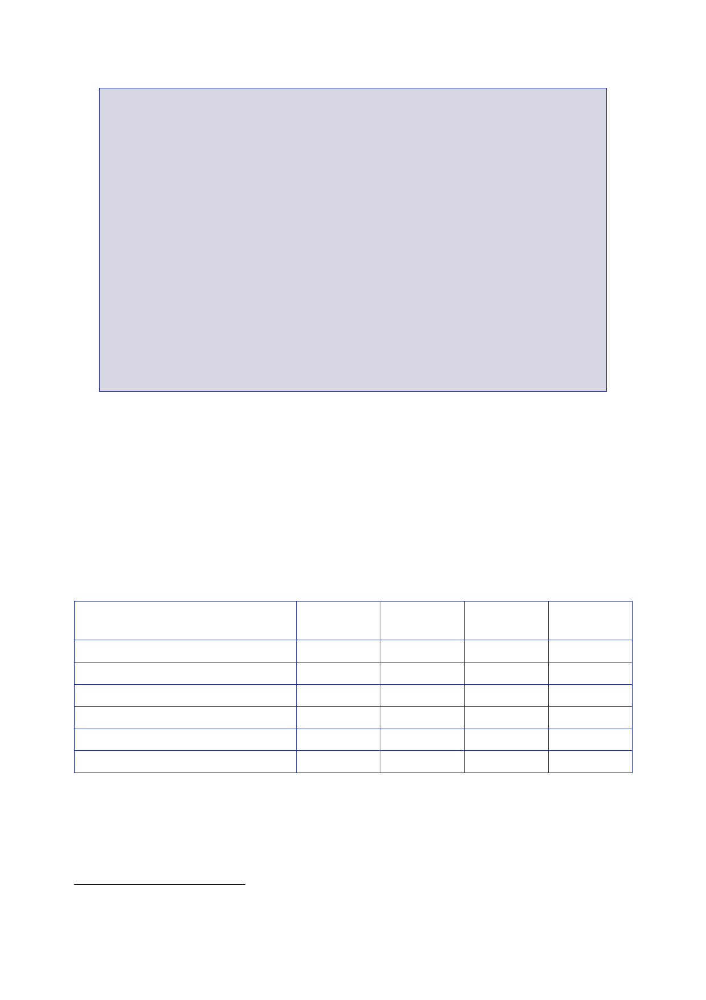

The Report
of the Iraq Inquiry
Resource
Accounting and Budgeting (RAB) has two key elements. First, costs
are
recorded
when resources are consumed rather than when the cash is spent.
Second,
to provide
a more accurate and transparent measure of the full economic
costs,
RAB incorporates
non‑cash costs including:
•
depreciation –
the consumption of capital assets over their useful economic
life;
•
impairments,
such as stock write‑offs; and
•
a cost of
capital charge – the opportunity and financing costs of holding
capital.
The
introduction of RAB by the Government was intended to create an
incentive for
departments
to reduce non‑cash costs, for example by reducing the amount and
value
of assets
and stocks held.
Under RAB,
the total Departmental Expenditure Limit (DEL) comprised three
elements:
a resource
budget (RDEL); a capital budget (CDEL); and adjustments to reflect
non‑cash
costs.
402.
While the 2002
settlement was presented in RAB terms, in order to
allow
reconciliation
back to previous settlements and to aid public presentation, the
letter also
gave an
estimate of the cash spending associated with the settlement. The
table below
presents
that estimate.
403.
The change
from cash accounting to RAB presented an opportunity for the
MOD
significantly
to increase its available cash by reducing its non‑cash costs
(depreciation
and the
cost of capital).
Resource
DEL
Capital
DEL
Less
depreciation
Less cost
of capital
Less other
changes
Estimated
cash spending
2002/03
(Baseline)
31.4
5.5
7.6
5.1
–
24.2
2003/04
Plans
33.0
6.0
8.1
5.2
0.1
25.6
2004/05
Plans
33.8
6.3
8.3
5.3
–
26.5
2005/06
Plans
34.7
6.9
8.8
5.4
–
27.4
404.
Mr Hoon
replied to Mr Boateng’s letter of 10 July on the same day,
welcoming the
proposed
increase in defence spending but pointing out that, in terms of
what the UK
was
expecting its Armed Forces to do, it was a “taut”
settlement.237
237
Letter Hoon
to Boateng, 10 July 2002, ‘SR2002: Ministry of
Defence’.
508